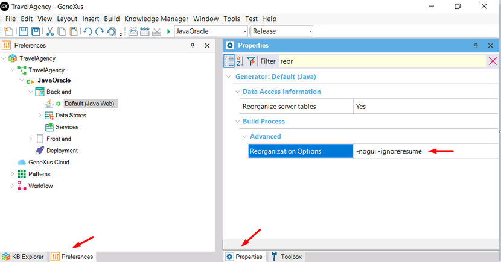

When running a Reorganization, the following error could eventually be displayed:
The last reorganization has failed and you are trying to execute a different reorganization. Unexpected errors may occur if you don't try to finalize previous reorganization before running this one. If you want to run this reorganization anyway, use 'ignoreresume' parameter.
Suppose you executed a reorganization (let's call it reorg1) and it failed. After that, you made some changes in the Transaction Structures that imply updating the database (probably trying to 'fix' the reorg1 failure). Therefore, a new reorganization (let's call it reorg2) is required and the displayed error occurs.
The reason is that GeneXus performs the reorganizations consecutively. If one reorganization fails and you try to perform another one, the previous reorganization will still be missing.
When a reorganization fails (in this case both reorg1 and reorg2 failed) you can check the following options:

Note: If the reorg1 reorganization made a change in the database and you use the -ignoreresume parameter, your reorganization may still not work because the target database has a change that GeneXus is not aware of. So, you will have to restore a Database Backup and rerun the reorganization.